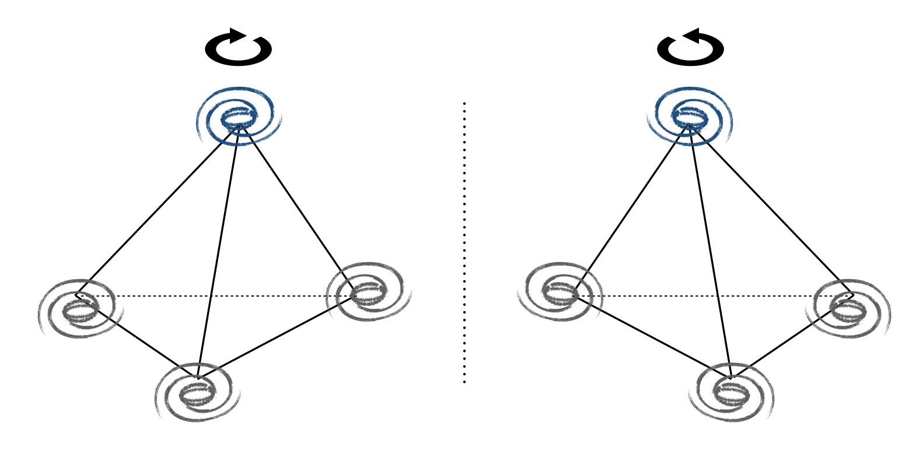
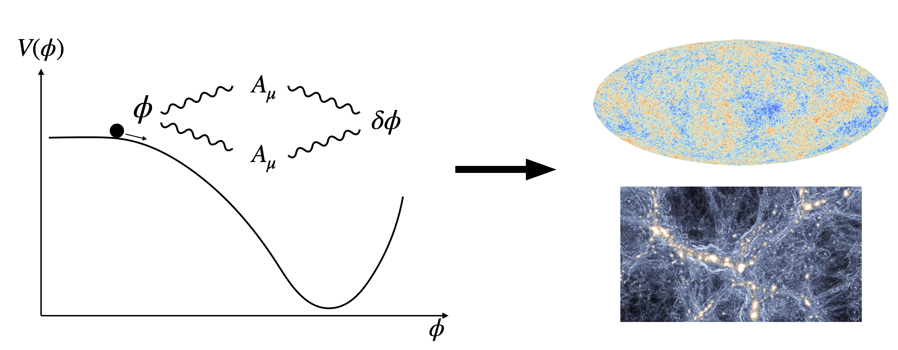
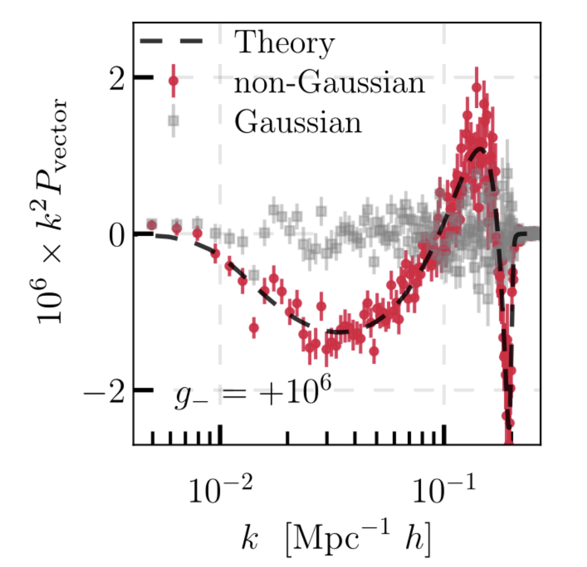
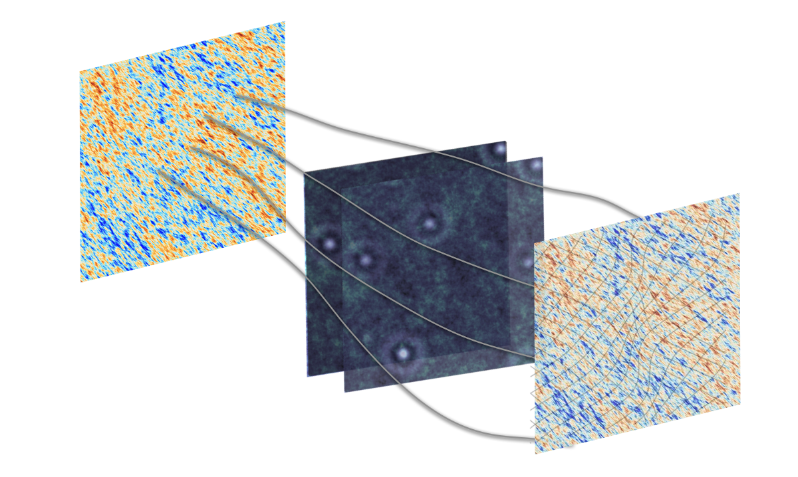
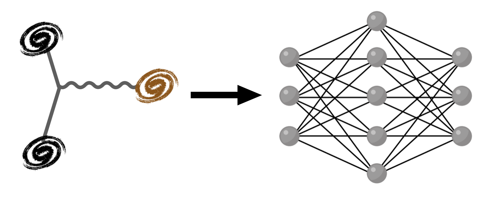
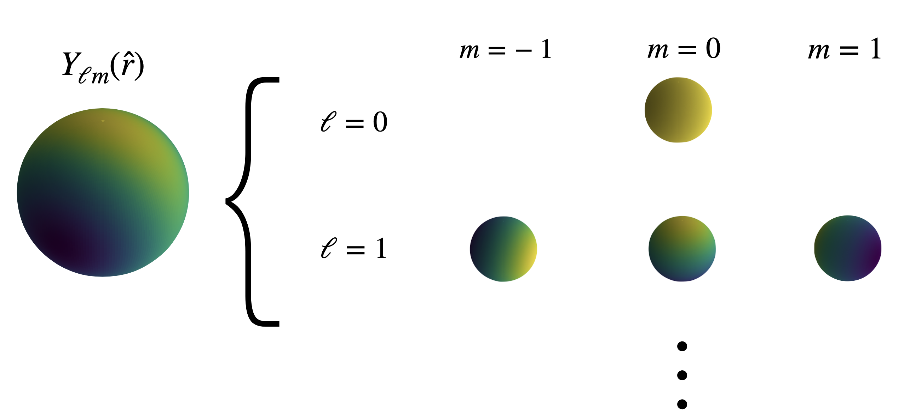
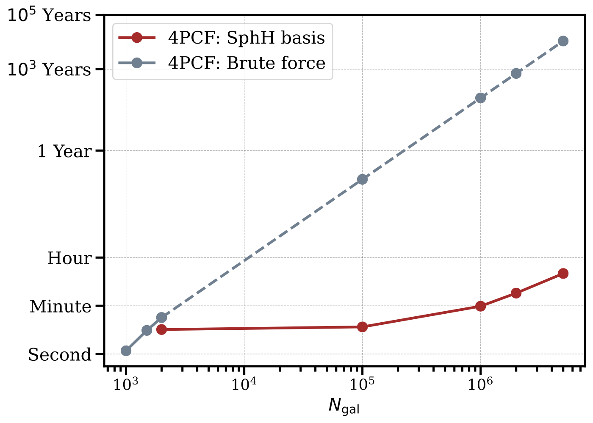

Bridging observational data and fundamental physics with higher-order statistics of the galaxy distribution.
Probing fundamental symmetries through higher-order correlation functions
Investigating parity violation on cosmological scales addresses some of the most profound questions in modern physics. Parity violation could provide a crucial link between cosmology and high-energy physics, potentially offering a window into inflationary physics as well as the nature of dark matter and dark energy. Discovering parity-violating signals in the cosmic microwave background or large-scale structure could reveal new physics beyond the Standard Model, particularly illuminating the mechanisms underlying the observed matter-antimatter asymmetry.

For scalar fields, the 4-point function is the lowest-order statistic sensitive to parity transformations. In the plot above, each vertex represents a galaxy, and a parity transformation applied to a tetrahedron formed by four galaxies reveals the handedness of cosmic structures.
BOSS Data Results: We employ 4-point correlation functions to isolate parity-odd information from galaxy clustering data. Our analysis of the Baryon Oscillation Spectroscopic Survey (BOSS) data yielded an intriguing indication of parity violation in large-scale structure. Although estimating statistical uncertainties remains a key challenge, these results motivate extending the framework to include complementary estimators, improved physical modeling, and new datasets.

The axion–U(1) model is one of the leading theoretical frameworks for understanding parity violation in cosmology. The axion field, originally proposed to solve the strong CP problem in particle physics, can act as the inflaton and generate primordial fluctuations that seed cosmological observables. In this model, gauge fields violate parity and transfer this asymmetry to the axion field, leaving distinctive imprints on the cosmic microwave background and large-scale structure. The connection between this inflationary model and galaxy observables manifests directly through the 4-point correlators. In Reinhard et al. (2024), we further explored simplifications of the 4-point correlator integral, as a step toward making the link between the model and observables more tractable.

4-point functions involve a high-dimensional data vector, which poses challenges for obtaining reliable error bars, particularly in covariance estimation. Moreover, the range we currently explore is sensitive only to certain tetrahedral configurations. Compressed estimators, such as the parity-odd power spectrum, offer a way forward. They reduce the effective degrees of freedom and are sensitive to different tetrahedral shapes than those probed by the 4-point statistics.

In addition to galaxy clustering, various cosmological probes can be sensitive to parity violation. One example is CMB lensing. As CMB photons travel from the last scattering surface to us, their paths are deflected by the intervening large-scale matter distribution. This gravitational lensing effect remaps the observed temperature and polarization fields of the CMB, encoding valuable information about the growth of structure and the geometry of the universe. If primordial parity-violating mechanisms exist, traces of this physics could survive in the lensing convergence map, providing a complementary probe to large-scale structure analyses.
Beyond CMB lensing, we are also working on other cosmological probes, stay tuned!
Leveraging machine learning for optimal cosmological parameter extraction

Simulation-based inference (SBI) offers a transformative approach to cosmological data analysis by moving beyond traditional methods that rely on assumed likelihood forms, approximate covariance matrices, or perturbative models. Instead, SBI leverages simulations together with neural network to directly learn the relationship between cosmological parameters and observables.
Galaxy skew spectra provide an efficient way to compress the information contained in three-point statistics into a form that resembles two-point functions, making them particularly powerful for extracting amplitude-like parameters such as primordial non-Gaussianities predicted by extensions of standard inflation. They are constructed by correlating a single density field with a weighted pairs of galaxies given by theory-motivated functions. As a compressed statistic, skew spectra help overcome key challenges of higher-order analyses, notably the high computational cost of estimators and the difficulty of covariance estimation.
Our application of SBI to skew spectra analysis of BOSS data demonstrates significant improvements in cosmological parameter constraints, achieving up to 30% improvement in precision for key cosmological parameters compared to traditional power spectrum analysis alone.
Computational breakthroughs for higher-order correlation functions

Spherical harmonics provide a natural and powerful basis for decomposing four-point functions in cosmology. Given the statistical isotropy of the Universe, it is essential to use a basis that respects rotational invariance. Each set of spherical harmonics spans a $(2\ell + 1)$-dimensional vector space, and tensor products of multiple such spaces decompose into a direct sum of irreducible representations labeled by total angular momentum $L$. The rotationally invariant singlet state ($L=0$) plays a key role in isolating isotropic contributions. In addition, spherical harmonics naturally separate into even and odd $\ell$, making them directly sensitive to parity transformations. Their factorizability further enables higher-order correlators to be reduced to products of pairwise computations, ensuring scalability to large datasets by significantly reducing computational cost.

Comparison of computational costs shows that spherical-harmonic-based N-point correlation function (NPCF) algorithms drastically outperform traditional brute-force approaches. In our benchmark studies, the dashed lines indicate a power-law extrapolation of the brute-force method, which would make NPCF calculations nearly infeasible for modern galaxy surveys. With GPU acceleration, computing the four-point function for millions of galaxies can be done in just a few minutes.
An exciting time for cosmology!
Upcoming galaxy surveys, such as the Dark Energy Spectroscopic Instrument (DESI), the Euclid Satellite Mission, and the Roman Space Telescope, will provide data covering large volumes, high number densities, and reaching to higher redshifts. An exciting time for cosmology!